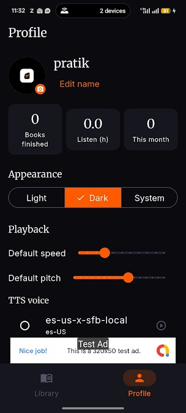
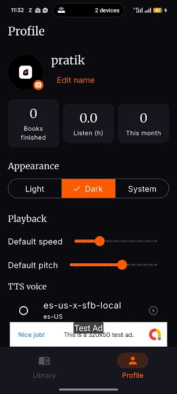
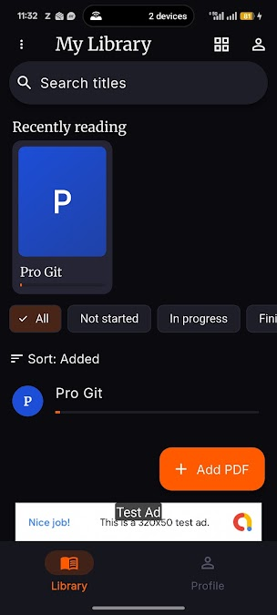
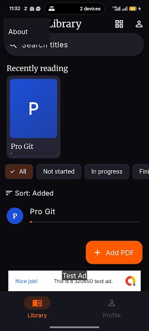
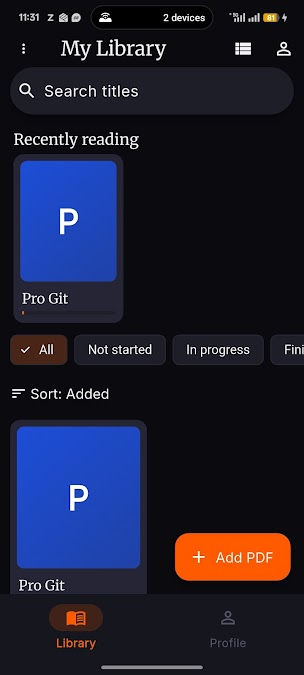

PDF to audio
Open text-based PDF files and hear books, notes, reports and manuals read aloud.
Independent Android product
Smart PDF Audio Reader
Listen to PDFs instead of staying tied to a screen.
SPAR is a PDF reader and text-to-speech app for Android. It turns documents into natural audio so students, professionals and everyday readers can learn, review and multitask hands-free.

Read less, listen more
Reading a lengthy PDF is not always practical. SPAR creates an audiobook-style experience for textbooks, research papers, reports, manuals, ebooks and other text-based PDF documents.
Open a file, begin playback and continue listening while commuting, exercising, working or relaxing. The interface stays focused on the document library, playback controls and listening progress.
Key features
The core experience covers importing, organizing, navigating and listening without adding unnecessary complexity.
Open text-based PDF files and hear books, notes, reports and manuals read aloud.
Use the voices available through the Android device's built-in text-to-speech engine.
Move through long documents using detected chapters and organized navigation.
Keep listening while using other apps or when the device screen is turned off.
Access convenient playback controls for a safer listening experience while driving.
Return to the previous listening position without searching through the document again.
Inside SPAR
These screenshots come directly from the current Google Play listing.




Product ownership
Pratik Purohit took SPAR from product idea through implementation, testing, privacy work and Play Store publication. The project combines mobile product thinking with practical engineering ownership.
Flutter, PDF processing, Android text-to-speech, background audio, Android Auto, testing and Play Store delivery
Common questions
Available on Android
Install SPAR from Google Play and turn your next PDF into a hands-free listening experience.